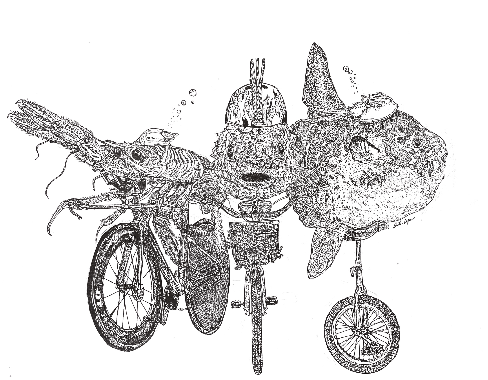
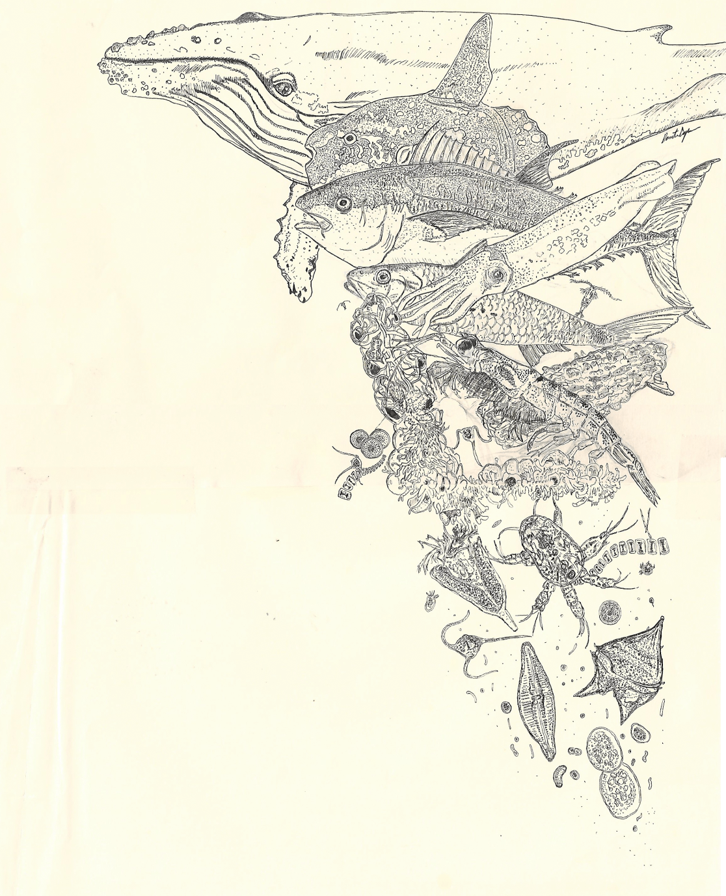
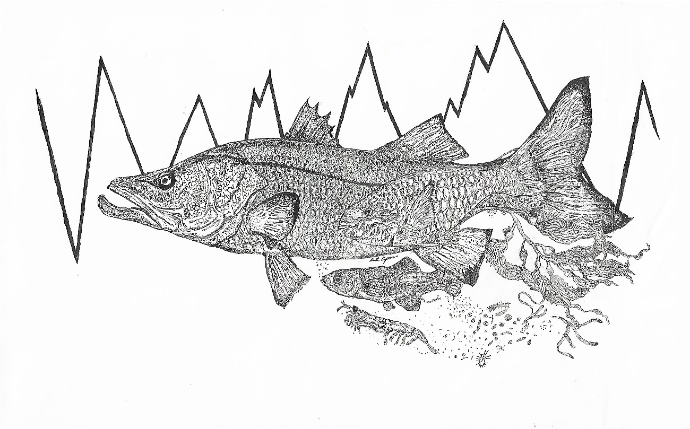
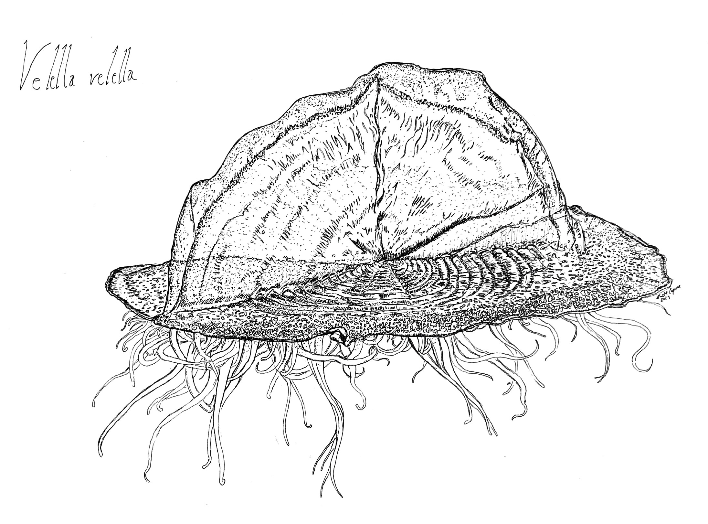
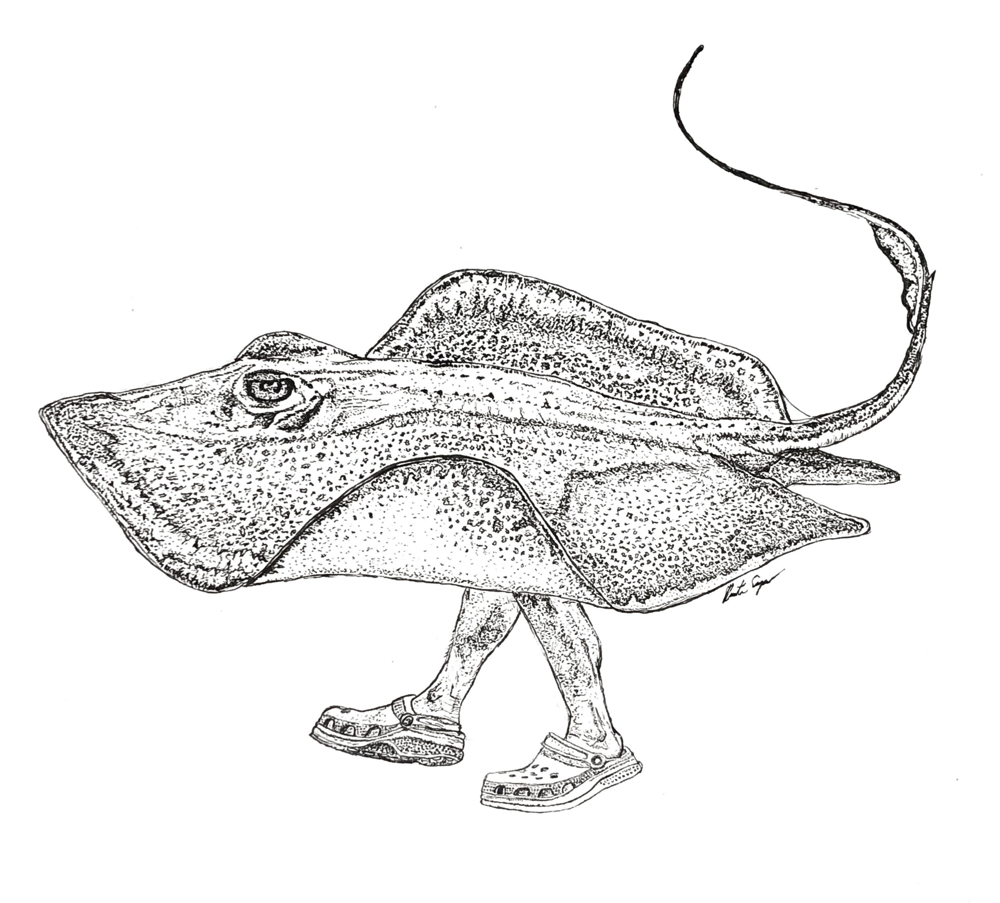
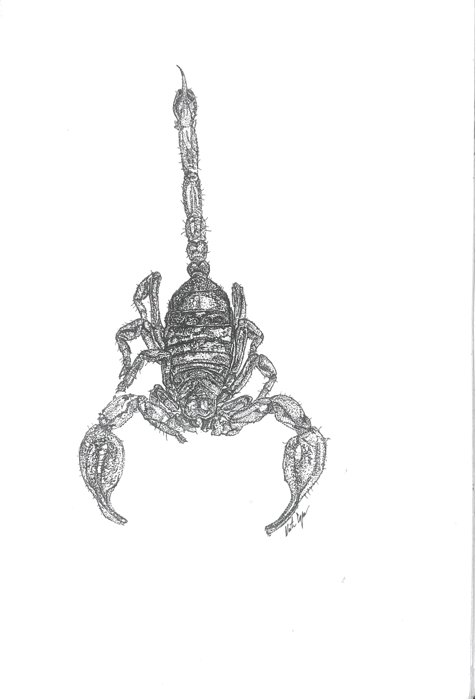
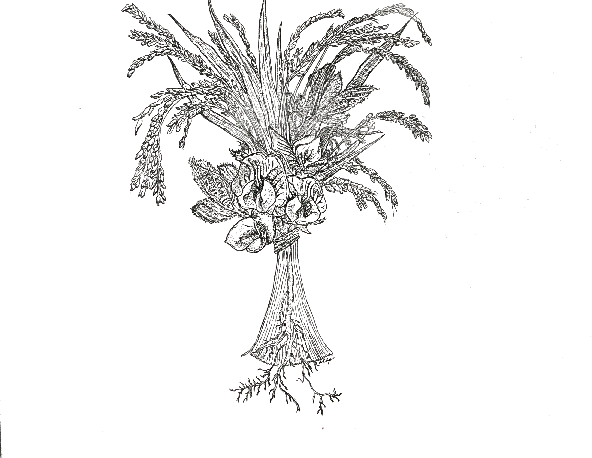

Art
Scientific illustration, conceptual diagrams, and visual communication work — part of an ongoing interest in how ecological observation and scientific knowledge are made visible.
Scientific Illustration

Bike to Work 2024
Digital illustration · 2024Conceptual Diagrams

Ecology Seminar
Conceptual diagram · 2024
CND Conceptual Diagram
Scientific visualization · 2024Outreach and Visual Communication

Velella velella
Scientific illustration · 2024
Stingray Shuffle
Outreach illustration · 2024
Scorpion
Scientific illustration · 2024
Soy Rice Bouquet
Conceptual illustration · 2024
To add images: place files in assets/images/ and replace the
placeholder <div class="art-thumb"> blocks with
<img> tags.